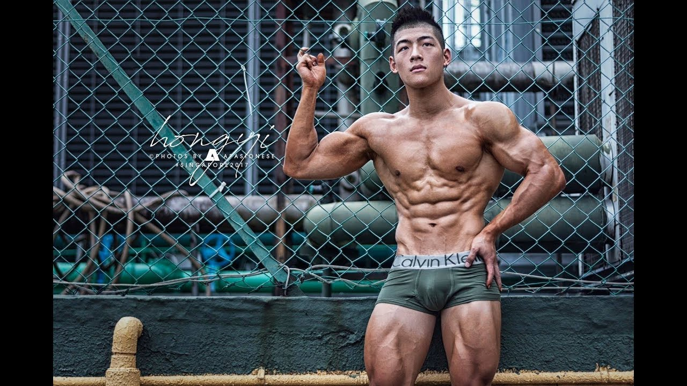
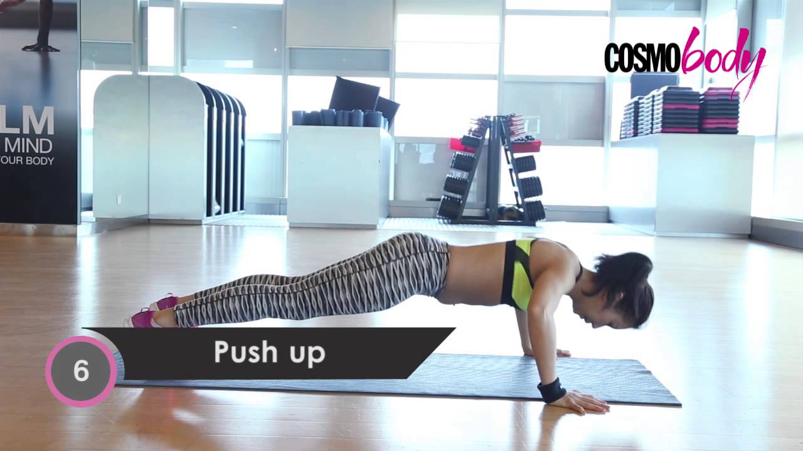
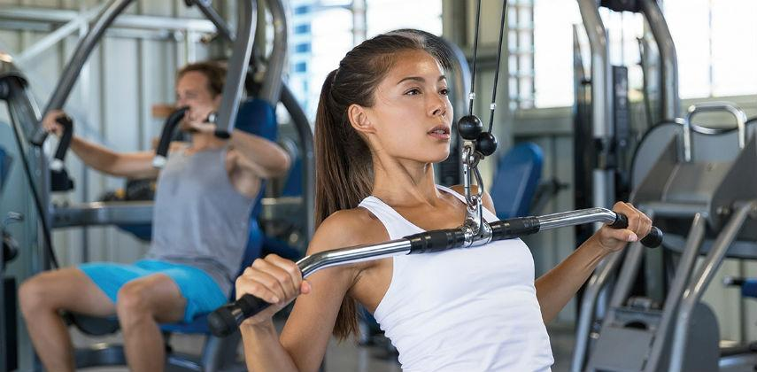
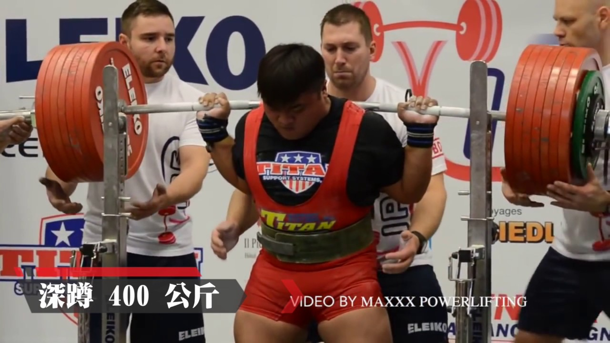
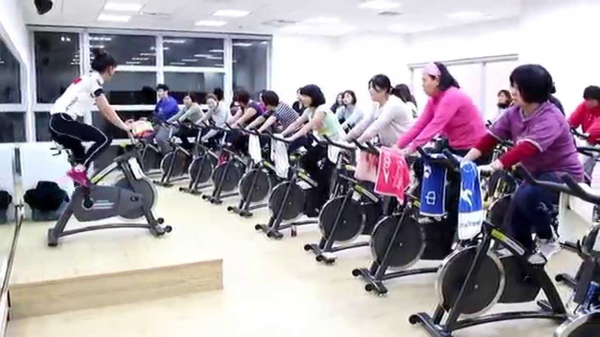

FITNESS
健身可按不同程度的身體鍛鍊來介定分類
健美
介紹
健美，（英語：Body Building），是一種強調肌肉健壯與美的活動，起源於古希臘，最初只由男性參加，當時是以男子的粗壯的脖子、發達的胸肌、粗壯的雙腿為美。 現代健美活動則由德國人尤金•山道（Eugen Sandow）開始。負重訓練是健美活動的重要訓練元素，目的是增加肌肉量及改善線條；此外，控制體內脂肪比率也是健美活動的重點，一般而言體態是否健美，與體脂肪率是否夠低、肌肉量是否夠高有絕對關係。 早期健美比賽裁判通常由解剖學與雕塑藝術家等組成；現代健美比賽裁判則由具健美協會組織專業認證的裁判組成。
體能鍛鍊
介紹
體能鍛鍊，又稱體能訓練、體適能訓練，泛指所有通過運動方式，來達到維持與發展適當體能、增進身體健康的身體活動。它的目標有許多種，包括：增強肌肉與循環系統、增進運動技能與身體體能、減重或維持體重或是單純的休閒等等。規律而定時的進行體能訓練，有助於活化身體的免疫系統、預防或改善一些文明病，例如：心血管疾病、2型糖尿病以及肥胖，也可以改善心理健康、減輕憂鬱、增進對壓力的抵抗能力、改善睡眠品質、改善失眠問題、有助於形成正面的自尊。
負重訓練
介紹
負重訓練（英語：weight training），在台灣習慣稱為重量訓練，簡稱重訓，是以增加肌肉強度及體積為目標的運動訓練。使用不同部位骨骼肌組織之收縮（向心收縮或離心收縮）產生之力量，抗衡重力（通常指啞鈴、槓鈴及其他器械之重量或阻力），使肌肉得到鍛鍊。針對人體不同的肌肉群組，有不同的重量訓練動作。 與舉重、健力及健美運動不同，重量訓練並非獨立的運動項目，而是不同運動員訓練的基本元素，用以提升肌力、爆發力、肌耐力或肌肉圍度，進而提升運動表現。 重量訓練為一精密之運動科學，當中的不同元素包括負重量、動作質素、重複次數、組數甚至訓練之間的休息時間，均會對訓練的結果造成影響。 重量訓練好處 增加肌肉力量 增加肌肉體積 改善體型 強化骨骼，減少骨質流失 幫助減脂
健力
介紹
健力（英語：Powerlifting），又稱力量舉重、力量舉，是一種藉助舉起槓鈴來鍛鍊肌肉的運動，分成深蹲、臥推、硬舉三個項目。它雖然發源自舉重，但與奧林匹克舉重分別為兩種競技項目，健力舉起槓鈴（Barbell）的動作方式、允許使用或穿著的輔助器材都與奧林匹克舉重不同[1]。雖然健力與奧林匹克舉重都取總舉起重量之和作為得分計算的基礎，但健力三項與奧林匹克舉重兩項之間不能直接對比成績高低，其中各個分項的動作方式都不同。即使是健力選手之間，逐項比較重量成績也與比較總成績同樣具有分析價值。
飛輪
介紹
飛輪（flywheel）是在旋轉運動中用於儲存旋轉動能的一種機械裝置。飛輪傾向於抵抗轉速的改變，當動力源對旋轉軸作用有一個變動的力矩時（例如往複式發動機），或是應用在間歇性負載時（例如活塞或沖床），飛輪可以減小轉速的波動，使旋轉運動更加平順。